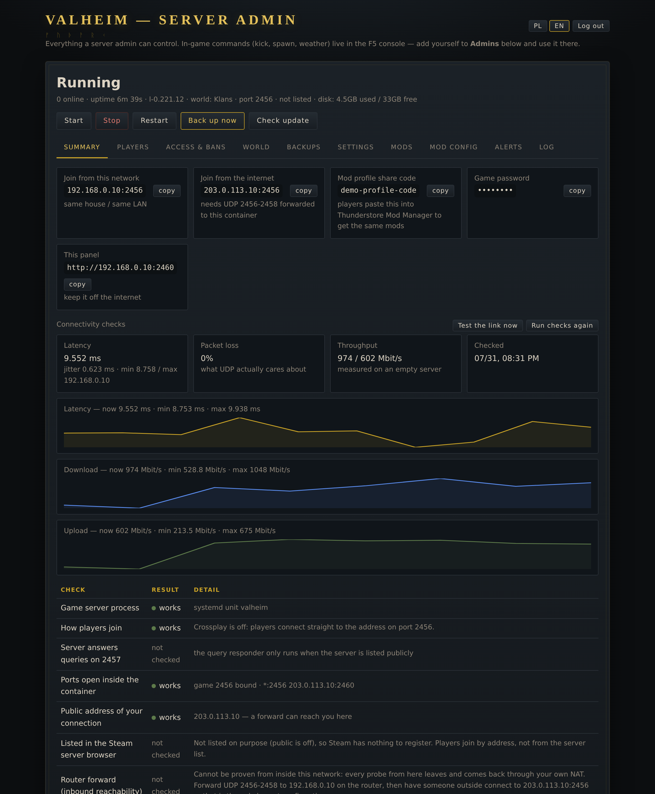
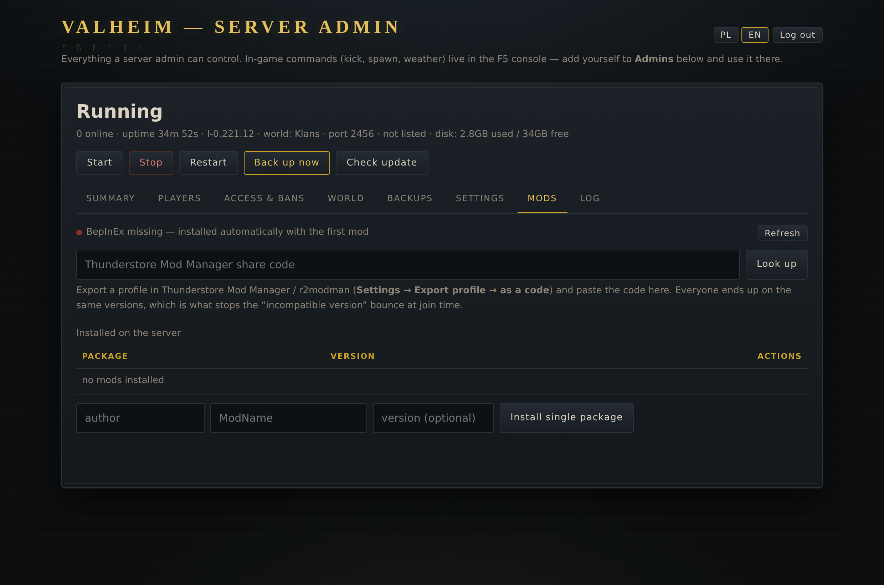
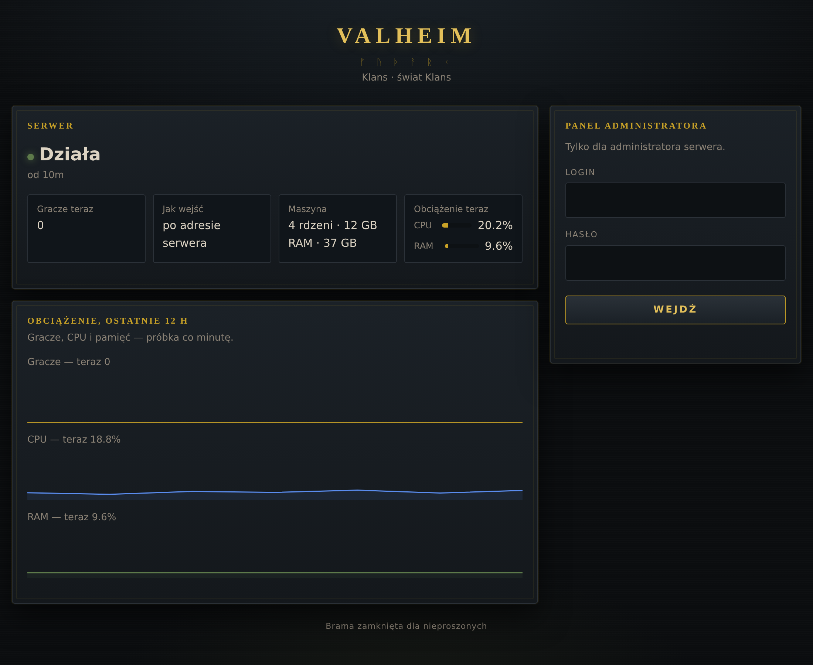
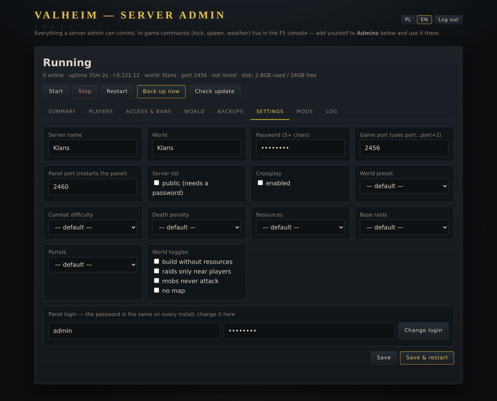

Serwer Valheima w kontenerze na Proxmoxie — z panelem w przeglądarce, modami z kodu profilu, kopiami co dwie godziny i launcherem, który graczom wszystko poukłada sam.
Skrypt buduje kontener LXC na Proxmoxie albo instaluje się w gotowym Debianie. Na końcu wypisuje adres, login i hasło do gry.
Start, stop, świat, gracze, bany, ustawienia, kopie, mody i log — każda akcja zapisana, własne logowanie z blokadą po nieudanych próbach.
Wklejasz kod z Thunderstore Mod Managera, panel rozwija go i instaluje dokładnie te wersje, które mają gracze.
Windows, macOS i Linux. Sam znajduje grę, pobiera mody serwera, aktualizuje się z GitHuba i wchodzi na serwer jednym przyciskiem.
Co dwie godziny, trzydzieści sztuk, świat zapisywany przed spakowaniem, a raz dziennie archiwum jest otwierane i czytane na dowód, że da się je odtworzyć.
Pad serwera z podaniem przyczyny, wejście gracza, brak miejsca, nieudana kopia, aktualizacja gry — przez ntfy, bez zakładania konta.




Projekt jest udostępniony na PolyForm Noncommercial 1.0.0. Krótko, bez prawniczego żargonu:
| Do czego wolno bez pytania i bez opłat | Na co potrzebna jest licencja komercyjna |
|---|---|
| Własny serwer dla siebie i znajomych. Klan, społeczność, serwer, na którym nikt nie płaci za wstęp. Nauka, badania, testy, majsterkowanie w domowej serwerowni. Zmiany w kodzie na własny użytek. | Hosting Valheima za pieniądze — i to niezależnie od tego, czy klient płaci za sam serwer, czy za pakiet z panelem. Sprzedawanie panelu albo launchera, także jako części większej usługi. Używanie tego wewnątrz firmy do jej działalności. |
Chcesz użyć komercyjnie? Cenę ustalam indywidualnie — zależy od skali, tego, czy potrzebujesz wsparcia i czy ma być z Twoim oznaczeniem. Napisz, co planujesz, a odpiszę z konkretną propozycją.
Kod sprzed zmiany licencji pozostaje na dawnych warunkach — licencja nie działa wstecz. Składniki innych autorów (BepInEx, UnityDoorstop, Flutter i biblioteki) mają własne licencje.
Na hoście Proxmox VE, jako root — skrypt zbuduje kontener i wypisze dane dostępowe:
bash -c "$(curl -fsSL https://raw.githubusercontent.com/PawelSzymanski89/valheim-proxmox/main/install.sh)"
Nie masz Proxmoxa? Ten sam projekt instaluje się w dowolnym
Debianie 12/13 skryptem setup.sh. Szczegóły, wymagania i opis
wszystkich funkcji są w README na GitHubie.